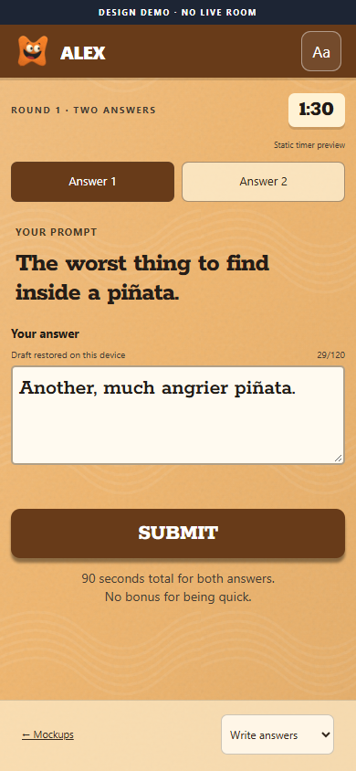

RIFFRAFF · PHONE CONTROLLER · DESIGN DRAFT 01
Your phone.
Your terrible ideas.
Scan in. Say something ridiculous.
Your phone is your seat at the table.
Interactive design prototype. Sample players and prompts.
No live room, account or download needed.

your phone.your terrible ideas.
01 / THE SCREENS
One job at a time.
The room does the show.
The phone gives your thumbs a job.
02 / THE INVITATION
Squishy outside.
Scannable inside.
A little tile of blue foam and orange clay. Dark, softly rounded blocks carry the real link; the fingerprints stay safely around the edges.
This QR opens the phone demo. In a live game, a fresh room link will take players straight to the name screen.


Built for actual thumbs.
Readable before decorative. Plain text on cream panels. Character, label and shape accompany every color.
Comfort stays personal. Larger text and reduced motion live on your phone. They never change another player’s settings.
A receipt means received. The live version will distinguish saved drafts, pending sends and server-confirmed submissions.
Ziggy is a voice. No avatar or physical host. Existing player artwork is reused; this study does not redesign the cast.